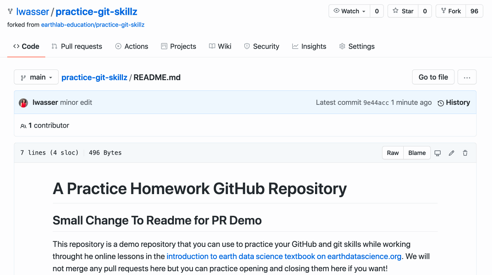
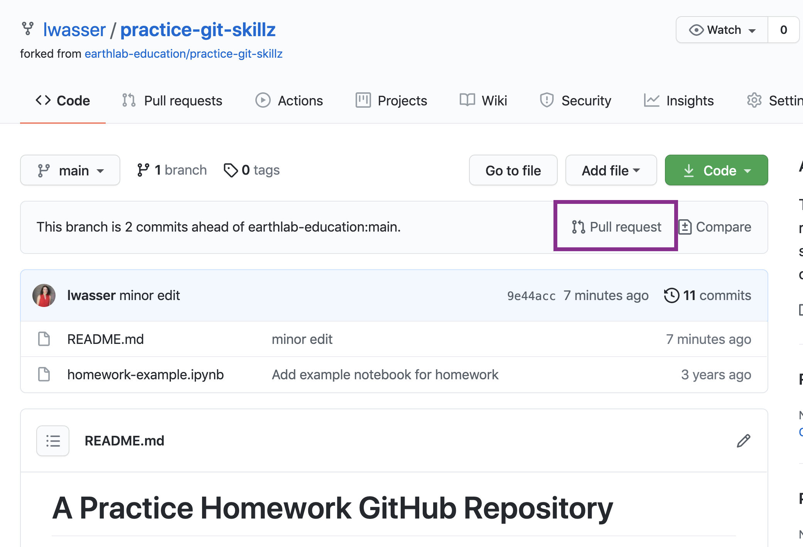
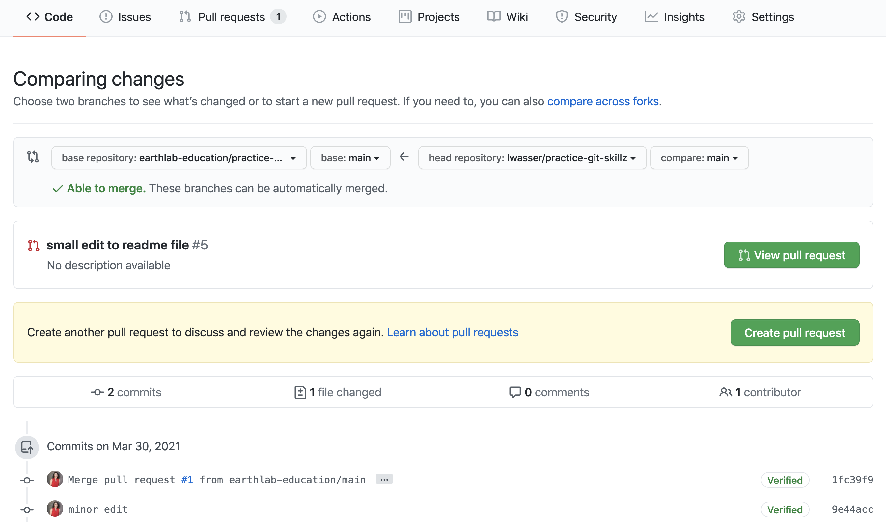
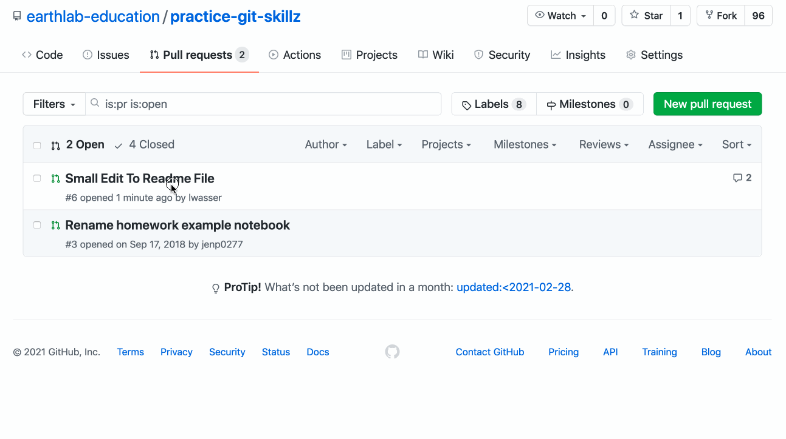
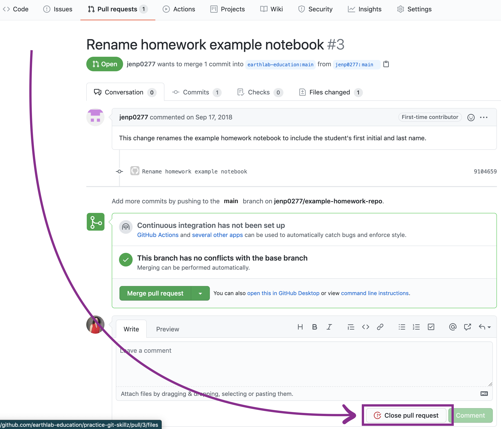

sequenceDiagram actor Alice participant Alice's Repository actor You participant Your Fork Alice-->>You: Hey, can you make a change to my repository? You-->>Alice: Sure! Let me go fork it! You->>Alice's Repository: Open up Alice's repository on GitHub activate Alice's Repository Alice's Repository->>Your Fork: Fork Alice's repository deactivate Alice's Repository activate Your Fork Your Fork->>Your Fork: Make a change Your Fork->>Alice's Repository: Create a Pull Request deactivate Your Fork You-->>Alice: Hey Alice -- I made a change! Alice-->>You: Oh, great! Let me check it out. Alice->>Alice's Repository: Review Pull Request activate Alice's Repository Alice-->>You: Looks good to me! Alice->>Alice's Repository: Merge Pull Request deactivate Alice's Repository Alice-->>You: Thanks, that was just what I needed!
Propose changes to GitHub repositories
Create pull requests on GitHub
A pull request allows anyone to suggest changes to a repository on GitHub that can be easily reviewed by others. Learn how to submit pull requests on GitHub.com to suggest changes to a GitHub repository.
Learning Goals:
- Explain what a pull request is and how it can be used.
- Explain the difference between a branch and a fork
- Explain the relationship between the head repository (e.g. a forked repository) and base (e.g. original repository or main branch) repository.
- Mention or call out someone to review your pull request on GitHub using
@GitHubUsername. - Explain what a diff is in GitHub.
- Submit a pull request of changes to a repository on GitHub.com.
Requesting changes to a repository
When you’re collaborating with someone on GitHub, you’ll find you want to be able to propose changes without actually making them to the default version. This is important for all collaboration (think about other online collaboration tools like Google Docs) – but it is especially important for code, because one error can break the whole thing. You want to make sure that all the code works together as expected before merging. A pull request (referred to as a PR) is a way for you to suggest or propose changes to code in a GitHub repository. It allows you and your collaborators to:
- See suggested changes side-by-side the original,
- Leave comments on individual lines,
- Discuss the changes
- Run tests on the new code to make sure it works with everything else, and
- Make sure that any suggestions adhere to group policies and norms,
all before making any official changes. Once everyone agrees on the changes, you can merge them in with the original.
Pull requests can be implemented in two ways, usually depending on what your relationship is with the project:
- When you are part of a project team, you will usually develop changes on a branch within the team’s repository.
- When contributing to a project from the outside, you usually make your changes in a fork (i.e. copy owned by you) of that repository.
In either case, once you think your code is ready, it’s polite to make a pull request rather than unilaterally making changes. That way your team can review what you’ve done! The ability to make changes in the main branch is usually restricted to just a few people.
Branches and Forks
GitHub has two different methods for making changes, branches and forks. Branches are for when you are a part of the core team for a project. Forks are for when you are contributing to someone else’s project. The key difference is that you own your fork, but you don’t own a branch. This allows repository owners to protect their repository from outside collaborators a little more carefully.
After you have made changes in a branch or a fork, you can propose them to the administrators as a Pull Request or PR.
Introduction to the Pull Request Workflow
Suppose that you are working with your colleague, Alice, on a project. You have been asked to make some changes to a file in your collaborator’s repository. Your workflow will look something like:
GitHub and Mentions: Communicating With Your Collaborators
After you have submitted your PR, your colleague can review the changes. It is good practice to “mention” your colleague specifically when you submit your PR to ensure that they see it. You can do that by using @<their-github-username> in a comment in the PR (e.g. @eastudent which will notify the GitHub user called eastudent).
Your colleague will review the changes. If they would like a few additional changes, they will request changes.
Once your colleague is happy with the changes, then they will merge your PR.
The Anatomy of a Diff (Difference Between Two Files)
Git keeps track of changes through additions and deletions on a character by character and line by line basis.
So, pretend that the word “great” is spelled incorrectly in a file, and you wish to fix the spelling. The edit that you will make is: graet is changed to great
The change above represents 2 character deletions and 2 additions.
The word great has 5 characters, so the number of characters is not changing in this example.
However, you are deleting: ae and replacing those two characters with ea.
As you edit files in a version control system like git, it is tracking each character addition and deletion. These tracked changes are what you see in a diff when you submit a pull request.
When you open up a pull request, you will see the line by line changes or differences between the file you submitted, compared to the file that exists in a repository. These changes are called diffs (short for differences).
Pull requests show diffs of the content between the branch and repository where you made changes, and the branch and repository that you are submitting changes to. The changes are shown in green and red. The color green represents additions to the file whereas red represents deletions.

GitHub Pull Requests Support Open Science and Open Collaboration
A pull request (herein referred to as PR) is ideal to use as a collaboration tool. A PR is similar to a “push” that you would make to a repository that you own. However, a PR also allows for a few things:
- It allows you to contribute to another repo without needing administrative privileges to make changes to the repository.
- It documents changes as they are made to a repository and as they address issues. It also makes those changes easily visible to anyone who may want to see them.
- It allows others to review your changes and suggest corrections, additions, and edits on a line by line basis to those changes as necessary.
- It supports and documents conversation between collaborators on the project.
- It allows repository administrators or code maintainers to control what gets added to the project repository.
Note if you do not own the repository that you wish to modify, a PR is the only way that you can contribute changes to that repository.
This ability to suggest changes to ANY repository, without needing administrative privileges is a powerful feature of GitHub.
This workflow supports open science because the entire process of updating content is open and supported by peer review. You can make as many changes as you want in your fork, and then suggest that the owner of the original repository incorporate those changes using a pull request.
Pull Request Terminology - Head vs. Base
Consider the example above where you were submitting changes to the contributing.rst file in your colleague’s repo. After pushing the changes to your fork, you are ready to make a pull request to your colleague’s repo.
When submitting a pull request, you need to specify both where you’d like to suggest the changes (e.g. your colleague’s repo) and where the changes are coming from (e.g. your fork or branch).
There are two key terms that you should know to set this up in Github:
- Base: Base is the repository and branch that will be updated. Changes will be added to this repository via the pull request. Following the example above, the base repo is your colleague’s repo.
- Head: Head is the repository and branch containing the changes that will be added to the base. Following the example above, this is your repository (your fork of your colleague’s repo).
One way to remember the difference between head and base is that the “head” is ahead of the “base”. Ahead means that there are changes in the head repo that the base repo does NOT have.
So, you need to add the changes from the head (your forked repo) to the base (your colleague’s repo).
When you begin a pull request, the head and base will auto-populate. It may look something like this:
- base fork:
your-colleagues-username/project-name - head fork:
your-username/project-name
Next, you will learn how to create a pull request in GitHub.
How To Submit Pull Requests To Suggest Changes To Repositories
This section is an overview of the pull request process on GitHub. You can also check out our forking and branching PR activities for a hand’s on experience.

@mention a collaborator who you want to review and merge the PR if you know who that will be.Step 1 - Start to Open Your Pull Request on GitHub
To start a PR, click the New pull request button on the main page of your forked repository.

Data Tip
There are many different ways to submit a pull request. You can also click the “Pull Requests” tab at the top of the main page of a repository to submit a pull request (PR). When the pull request page opens, click the “New pull request” button to initiate a PR. You can also click on the PR button in the repository that you are submitting changes to!
Step 2 - Select Repository That You Want to Update on GitHub
In this example, you are updating another repository with changes from your fork.
Next, select both the repo that you wish to update (the base repo) and the repo that contains the content that you wish to use to update the base (the head repo).
In this example, you want to update:
- base:
your-colleagues-username/project-namewith - head: commits in your fork
your-username/project-name.
The above pull request configuration tells GitHub to update the base repository with contents from your forked repository, or the head repository.
Step 3 - Verify The Changes In Your Pull Request
When you compare two repos in a pull request page, GitHub provides an overview of the differences (diffs) between the files.
Carefully review these changes to ensure that the changes that you are submitting are in fact the ones that you want to submit.
- First, look at the number of files. How many files did you modify? Do you see that many files listed in the PR?
- Look over the changes made to each file. Do the changes all look correct (like changes that you committed to the repository)?

Data Tip
You can also click on the commit titles to see the specific changes in each commit. This is another way to check that the contents of a PR are what you expect them to be.
This review of your own PR before submitting it is important. Remember that someone else is going to take time to review your PR.
Make sure that you take care of cleaning up what you can FIRST, before submitting the PR.
Pull Requests and Your Location On GitHub
When you create a new pull request, you will be automatically transferred to the GitHub.com URL or landing page for the base repository (your colleague’s repository).
At this point, you have submitted your pull request!
At the bottom of your pull request, you may see an large green button that says Merge Pull Request. This button will be used by owner of the repository (your colleague or perhaps others working on this collaborative project) to merge in your changes, when a review has been completed.
The repo owner will review your PR and may ask for changes. When they are happy with all of the changes, your PR could get merged!
Data Tip
All future commits that you make to your fork (on the branch where you are working) will continue to be added to the open pull request UNTIL it is merged.
How To Merge GitHub Pull Requests on GitHub
After you have submitted your PR, someone who owns or manages the repo where you are submitting the PR will review it. At this point, they will either:
- suggest that you make some changes to the PR or
- merge the PR if they are happy with all of the changes that you made.
A screencast showing how this process works is below.

How To Close Pull Requests on GitHub
You can also close a pull request on GitHub if you decide you are not ready to submit your files from your forked repository to the original repository.
For example, the pull request you just created in this lesson can be closed anytime before it is merged.
When you are ready to submit changes, you can simply create a new pull request on GitHub following these same steps.
To close a pull request, click on Close pull request button towards the bottom of the pull request page.
